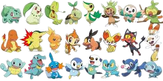

Esses são todos os pokemons iniciais de todas as gerações

O que é um pokemon inicial ?
Quando um garoto ou garota completa seu décimo aniversário, ele pode iniciar uma jornada Pokémon. Para isso, o jovem treinador deve escolher um dos Pokémon iniciais de sua região, comparecendo ao laboratório de sua cidade, onde o professor ou professora responsável pela distribuição dos Pokémon iniciais estará aguardando.
Os novos aventureiros podem escolher entre um Pokémon do tipo planta, fogo ou água. O tipo planta tem vantagem sobre o tipo água, que tem vantagem sobre o tipo fogo, que por sua vez tem vantagem sobre o tipo planta.